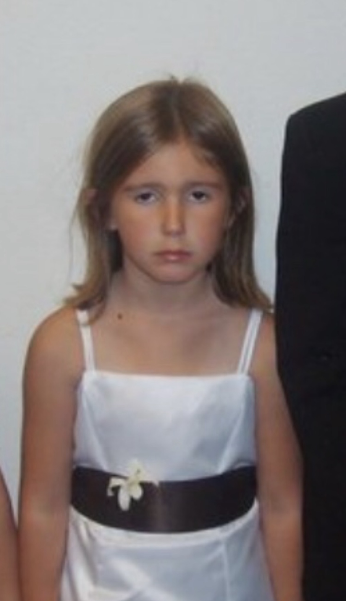

DSGN372
Spring ’25
- Project 1
- Project 1 Process
- Project 2
- Project 2 Process

Hi! I’m Autumn. I started out as a self-taught creator who’s always been drawn to illustration, mixed-media, and creating in all forms. While I’ve long admired graphic design,
it wasn’t until a few years ago that I truly found my passion for it. Since then, I’ve begun seeing the world through a design-centric lens, constantly on the lookout for innovative
ideas, people to learn from, and ways in which I can bring interest into the world around me. The Graphic Design BFA at WWU has opened up incredible opportunities for me, offering both
knowledge and a supportive, pro-learning environment. I’m particularly passionate about print media, branding, and motion and am looking forward to applying my visual communication
skills to real life solutions. When I’m not creating, I’m hanging out with my cat Blue, serving and bartending at a local craft cocktail hot-spot, and filling up my truck’s power-steering fluid weekly.
© Autumn Rifenbury
autumnrifenbury@gmail.com